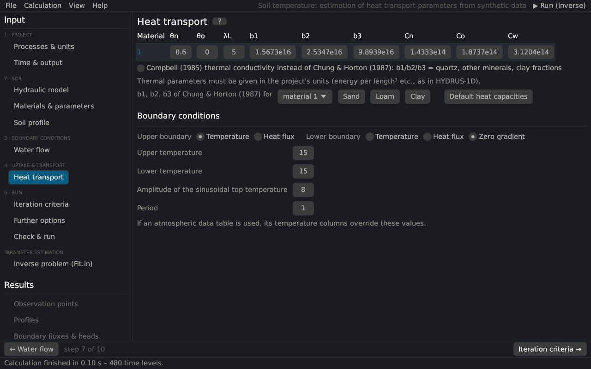

Input (pre-processing)
Heat transport
The page holds the Heat Transport Parameters and Heat Transport Boundary Conditions of HYDRUS-1D. The equations are in heat transport.


Parameters per material
| Parameter | Description |
|---|---|
| θn | volume fraction of the solid phase [–] (≈ 1 − porosity) |
| θo | volume fraction of organic matter [–] |
| λL | longitudinal thermal dispersivity [L] |
| b1, b2, b3 | coefficients of the thermal conductivity λ0(θ) = b1 + b2 θ + b3 θ0.5 Chung and Horton (1987) |
| Cn, Co, Cw | volumetric heat capacities of the solid phase, organic matter and water de Vries (1963) |
The thermal parameters are in the project's units with the mass in kg (units). The buttons enter typical values converted to the project's units:
| Button | Values |
|---|---|
| b1, b2, b3 for sand / loam / clay | Chung and Horton (1987): sand 0.228, −2.406, 4.909; loam 0.243, 0.393, 1.534; clay −0.197, −0.962, 2.521 W/m/K |
| Default heat capacities | Cn = 1.92, Co = 2.51, Cw = 4.18 MJ/m³/K |
Campbell (1985) thermal conductivity uses the function of Campbell (1985) instead; b1, b2 and b3 then hold the volume fractions of quartz, other minerals and clay.
Boundary conditions
| Input | Description |
|---|---|
| Upper boundary | temperature (first type) or heat flux (third type: the heat carried by the entering water) |
| Lower boundary | temperature, heat flux or zero gradient |
| Upper / lower temperature | [°C]; overridden by the Ttop / Tbot columns of the time-variable data |
| Amplitude, period | sinusoidal daily variation of the surface temperature, T(t) = Ttop + A sin(2π t / p − 7π/12) with the amplitude A and the period p; the maximum is reached at 13:00 for p = 1 d |
With the surface energy balance the surface temperature follows from the energy balance instead.
The initial temperatures are set on the page Soil profile.
Literature cited in this topic
- Campbell, G. S. (1985). Soil Physics with BASIC: Transport Models for Soil-Plant Systems. Elsevier, Amsterdam, 150 pp.
- Chung, S.-O., and R. Horton (1987). Soil heat and water flow with a partial surface mulch. Water Resources Research 23(12): 2175–2186. doi:10.1029/WR023i012p02175
- de Vries, D. A. (1963). Thermal properties of soils. In: W. R. van Wijk (ed.), Physics of Plant Environment, North-Holland, Amsterdam, pp. 210–235.
All sources: References.